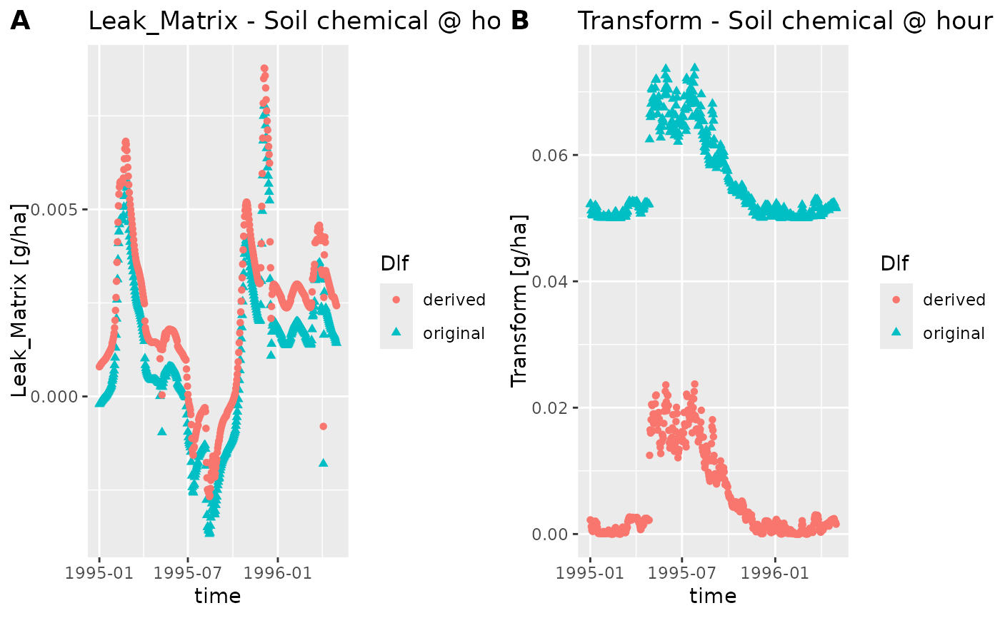

Convenience function for plotting daily logged variables in a scatter plot
plot_daily.RdConvenience function for plotting daily logged variables in a scatter plot
Arguments
- dlfs
Either a list of Dlf or a single Dlf. If a list with of components, the names are used for the legend.
- variables
Either a list of variables to plot, or a single variable
- hour
Which hour to plot
- title_suffix
A string that is appended to the title of all subplots
- plot_line
If TRUE plot both points and line otherwise only plot points
Examples
## Load dlf data with read_dlf
data_dir <- system.file("extdata", package="daisyrVis")
path <- file.path(data_dir, "hourly/P2D-Daily-Soil_Chemical_110cm.dlf")
dlf <- read_dlf(path)
## Be careful with variable names. R does not like - so it is replaced with _
vars <- c("Leak_Matrix", "Transform")
## Plot a single dlf
hour <- 0
plot_daily(dlf, vars, hour, paste0(" - Soil chemical @ hour ", hour), TRUE)
## Plot multiple dlfs together
dlf2 <- dlf
dlf2[["Leak_Matrix"]] <- dlf2[["Leak_Matrix"]] + 0.001
dlf$Transform <- dlf2$Transform + 0.05
dlfs <- list(original=dlf, derived=dlf2)
hour <- hour + 2
plot_daily(dlfs, vars, hour, paste0(" - Soil chemical @ hour ", hour))
